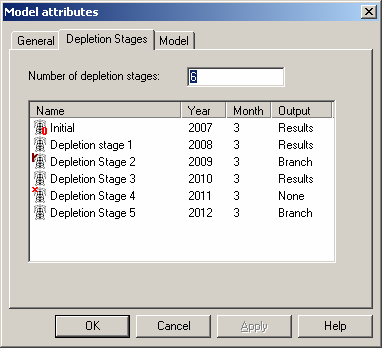

The default setting of Geomec is that
(i) the computation runs from stress initialization (D0) up to the last depletion stage (Dl).
(ii) all Depletion Stages contain results
(iii) material parameters remain constant during the run)
(iv) no intermediate results are saved or exported.
The user can deviate from this default (for non-linear computations only):
· allowing material parameters to change during a run (Phased approach)
· exporting intermediate restart files (Branching), including the option to change material parameters after such a Branch
· applying different elastic parameters at the start of a new phase or branch, dependent on whether the trend is compaction or decompaction.
· choosing to NOT save results for certain depletion stages to keep the file size small (mainly to get around file size limits on 32bit Operating Systems)
Secondly, a user might want to see the effects of depletion forecast variants without having to rerun the full –history matched – past over and over again. This is possible by restarting a calculation after a certain depletion stage. A second advantage of saving intermediate results is that divergence (resulting from too large time steps or too little iterations) can be corrected (iteratively) without running the full model. Also, a new depletion stage can be added, allowing continuation of a model when new pressure data come available.
The Restart and Storage items are valid only for Non-linear calculations. For linear calculations little profit can be gained from using old data (since the Finite Element matrix is inverted only once for the complete set of Depletion Stages).
Running a non-linear calculation in linear mode (to compare results) might render a data overflow for large models. All the linear data for all Depletion Stages are stored in the Geomec file as are any depletion stages which have been set to a "None" output type.
Under the “Model attributes”, “Depletion Stages” the user can click on the Output column, which reads “Results” by default. A drop down box appears allowing the user to change the selection to either “None”, “Phase”, or “Branch”. When “None” is selected Geomec will not store output for the selected Depletion Stage.
In the Figure, Depletion Stage 4 is earmarked as “None”. A small red X is shown on the small drill rig symbol on the left-hand side.

The Initialization Stage and the Last Depletion Stage must always have results. There is no option to select "None" here. Branch/Phase Stages always have results by definition.
When the user wishes to create a Phased option, he/she should select “Phase” under the “Model attributes”, “Depletion Stages”, “Output” column.
When a Phase option is chosen for a certain Depletion Stage (say D2), this Depletion Stage will create a temporary save file, so that the next Stage (D3 in this case) can be restarted with new material parameters. New leaves will open up in the material sections of Formations and Faults, labeled as D3. The user can attribute a new material model, which must be the same constitutive model. Hence you cannot replace a Camclay model for a salt creep model. The user can also attribute different material parameter pointsets for different stages.
Basically what happens is the stress field of D2 is imposed as initial stress on a stiffness matrix with properties of D3. One extra step is included to perform the stress initialization. If the user had set 4 time steps for D3, he will observe 5 steps, including the stess initializing load step.
Main difference with the Branch option, is that no intermediate restart files get created that take a lot of disk space (and a bit of writing time). This option should be used for the benefit of changing material parameters only.
The user can not set a Phase option for the last depletion stage (Dl), since there is no follow-up from that stage.
When a Restart option is chosen for a certain Depletion Stage, this Depletion Stage will be saved to file as a GMP file and a Filosfile. The user can open up this intermediate GMP file and restart the computation from here. This can be the starting point for any future calculations, for instance to run variants for depletion strategies (using the same history matched past Depletion Stages), but can also be used to change material parameters, similar to the Phased Analysis A Restart also allows to restart a diverged, unfinished or crashed calculation, hence saving time by not rerunning the first depletion stages.
When the user wishes to create a Restart option or Branch option, he/she should select “Branch” under the “Model attributes”, “Depletion Stages”, “Output” column. In the Figure Depletion stages 2 and 5 have been given a “Branch” status.
During such a run, 2 files are created per Branched Depletion Stage. A separate Geomec file (*.GMP) is created and a FILOS-file (*.FF). The FILOS-file contains all the internal state parameters of the Finite Element package, that are not preserved in the Geomec *.GMP file.
The file names of both files start with the original file name and get extended by the characters “_Dx”, where x is the number of the depletion stage. A branch of depletion Stage 2 of the model “Test.GMP” will result in the files “Test_D2.GMP” and “Test_D2.FF”.
After creation of the Branch files, the original file will continue to run. It resets the step numbers in the Diana-output screen to zero. This might be confusing sometimes if you keep track on a lengthy run (with many steps).
Within a single run, multiple Branch (Restart) files can be written to disk if the user selects multiple branch Stages. The user should realise that the *.GMP and *.FF files can grow and become rather large thereby filling up the hard-disc quickly.
If a user observes that a calculation is not running properly anymore (non-convergence or divergence), he/she can kill the run (using the Stop button) and continue the run from a saved Restart file (after having modified the step sizes and/or the iteration scheme).
When opening a branched file (recognised by a Dn extension, with n being a step number), the user is not able to modify material parameters, global settings or properties (pressures, iteration schemes, etc) belonging to the Depletion Stages which have been calculated already. If this were allowed, than the Geomec Depletion Stage data would no longer refer to the calculated results.
To reuse a branched file as a new Geomec file the user can choose menu option “Analysis” and “Clear Analysis History”. All results will then be deleted and the link with the FILOS- file will be broken. The user can now modify all parameters. If for some reason the data-entries remain blocked it is advised to unmesh and re-mesh the model to remove the block.
The Depletion Stage which contains the last "frozen" results and is the starting point for new calculations, can be recognised by a small brown branch icon, to the left of the drill rig symbol (Depletion Stage 2 in figure). In this example any data that belongs to depletion stages 3 and higher (temperature, pressure, time-step, iteration scheme) can be changed, others are frozen.
When the user changes input data the results of all stages become invalid. This might alarm users afraid of losing data. However, when running the updated model Geomec will extract "old" data from the FILOS file and complement them with new results.
To continue a Restart run the user needs to press the non-linear button (or issue the non-linear command from the file menu).
The Restart file and the FILOS file have the same name before the extension. The Geomec file Test_D1.GMP will look for a FILOS-file called Test_D1.FF in the same directory.
Renaming the Geomec file will require a (manual) renaming of the FILOS file also.
If multiple variations are run from the same Branched GMP file the user should create separate folders with copies of the GMP and FF files. Alternatively the user can make copies with renamed versions of the GMP and FF files. The file name (before the extension) should be identical for the GMP and FF file. Otherwise, newer results will overwrite older results.
If the FILOS-file (FF) gets lost, or is in a different directory to the Geomec (GMP) file or is not identical in name to the GMP file, restarts are impossible. The user gets an error message when issuing the run command.
A branch file from a previous branched file will get a double extension. In the given example, a branch file at Depletion Stage 5 using the “Test_D2.GMP” file will result in the files “Test_D2_D5.GMP” and “Test_D2_D5.FF”.
A special feature in Geomec is to apply compaction and decompaction parameters for “elastic” response. This routine must be switched on under “Settings \ Analysis Options” by checking “use separate linear compaction and decompaction parameters”
The background of the method is some materials respond differently to compaction or decompaction as a result of formation of microcracks under decompaction. The method does not take hysteresis into account. Multiple cycles of compaction and decompaction will result in increasing dilation, assuming the decompaction stiffness is lower than the compaction stiffness.
Geomec only determines (and distributes) decompaction parameters (for Young’s Modulus and Poisson’s Ratio) after a Phase or Branch stage. Geomec will apply a very small loading step (1% of total depletion) with the new material compaction parameters new depletion/injection trends. Based on the compaction or decompaction strain per element, Geomec attributes compaction or decompaction parameters. There is no iteration loop or updates of the parameters until a new Phase or Stage is encountered. (De)compaction parameters hence remain unchanged, even if the trend flips between compaction and decompaction.
If the user applies pointsets for Young’s Modulus and/or Poisson’s ratio (in compaction), he should also enter pointsets for decompaction, either direct copies or modified values. The alternative is that Geomec takes compaction parameters from the pointset and decompaction parameters from the Material Library!
Since changing material parameters is a non-linearity, the method only works for non-linear computations. If only linear elastic material and fault parameters ae being used, the maximum nr of steps (per depletion stage) can be set to 1.
As a result of the stress initialization at the beginning of a Branch/Phase, the small (scouting) step and the stress initialization with the (potential) decompaction parameters, 3 extra steps will be taken, with respect to the case without branches or phases. This will slow down the total computation time.